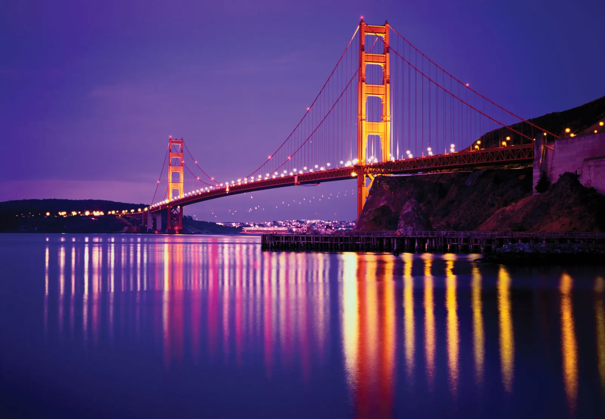
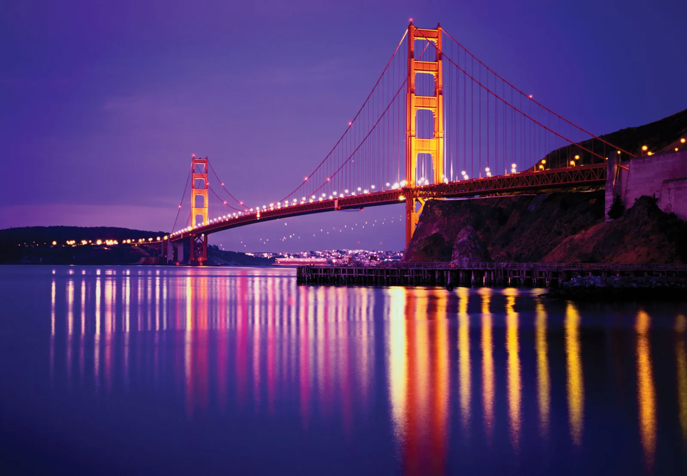

Angkor Wat-Cambodia

Angkor Wat is an enormous Buddhist temple complex located in northern Cambodia.
It was originally built in the first half of the 12th century as a Hindu temple.
Spread across more than 400 acres, Angkor Wat is said to be the largest religious
monument in the world.
It was originally built in the first half of the 12th century as a Hindu temple.
Spread across more than 400 acres, Angkor Wat is said to be the largest religious
monument in the world.
Great Canyan-USA

Grand Canyon National Park, in Arizona, is home to much of the immense
Grand Canyon, with its layered bands of red rock revealing millions of
years of geological history.
Grand Canyon, with its layered bands of red rock revealing millions of
years of geological history.
Amazon Forest-South America

The Amazon Rainforest stretches from the Atlantic Ocean in the east to
the tree line of the Andes in the west. The forest widens from a
200-mile (320-km) front along the Atlantic to a belt 1,200 miles
(1,900 km) wide at the Andean foothills.



the tree line of the Andes in the west. The forest widens from a
200-mile (320-km) front along the Atlantic to a belt 1,200 miles
(1,900 km) wide at the Andean foothills.
Taj Mahal-Agra
The Taj Mahal is an Islamic ivory-white marble mausoleum on the
right bank of the river Yamuna in Agra, Uttar Pradesh, India.
It was commissioned in 1631 by the fifth Mughal emperor,
Shah Jahan to house the tomb of his favourite wife, Mumtaz Mahal
right bank of the river Yamuna in Agra, Uttar Pradesh, India.
It was commissioned in 1631 by the fifth Mughal emperor,
Shah Jahan to house the tomb of his favourite wife, Mumtaz Mahal
Eiffle Tower-Paris
The Eiffel Tower is a wrought-iron lattice tower on the Champ de Mars in Paris, France.
It is named after the engineer Gustave Eiffel, whose company designed and built the
tower. Locally nicknamed "La dame de fer", it was constructed from 1887 to 1889 as the
centerpiece of the 1889 World's Fair.
It is named after the engineer Gustave Eiffel, whose company designed and built the
tower. Locally nicknamed "La dame de fer", it was constructed from 1887 to 1889 as the
centerpiece of the 1889 World's Fair.
Pyramid of Giza-Egypt
The Great Pyramid of Giza is the largest Egyptian pyramid and the tomb of Fourth
Dynasty pharaoh Khufu. Built in the early 26th century BC during a period of around
27 years, the pyramid is the oldest of the Seven Wonders of the Ancient World, and
the only one to remain largely intact.
Dynasty pharaoh Khufu. Built in the early 26th century BC during a period of around
27 years, the pyramid is the oldest of the Seven Wonders of the Ancient World, and
the only one to remain largely intact.
Great Wall Of China-Bejing
The Great Wall of China is a series of fortifications that were built across the
historical northern borders of ancient Chinese states and Imperial China as
protection against various nomadic groups from the Eurasian Steppe.
historical northern borders of ancient Chinese states and Imperial China as
protection against various nomadic groups from the Eurasian Steppe.
Machu Picchu
Machu Picchu is an Incan citadel set high in the Andes Mountains in Peru, above
the Urubamba River valley. Built in the 15th century and later abandoned, it’s
renowned for its sophisticated dry-stone walls that fuse huge blocks without the
use of mortar, intriguing buildings that play on astronomical alignments and
panoramic views. Its exact former use remains a mystery.
the Urubamba River valley. Built in the 15th century and later abandoned, it’s
renowned for its sophisticated dry-stone walls that fuse huge blocks without the
use of mortar, intriguing buildings that play on astronomical alignments and
panoramic views. Its exact former use remains a mystery.
Niagara Falls
Niagara Falls is a group of three waterfalls at the southern end of Niagara Gorge,
spanning the border between the province of Ontario in Canada and the state of New
York in the United States. The largest of the three is Horseshoe Falls, which
straddles the international border of the two countries.
spanning the border between the province of Ontario in Canada and the state of New
York in the United States. The largest of the three is Horseshoe Falls, which
straddles the international border of the two countries.
Burj Khalifa-Dubai
The Burj Khalifa, known as the Burj Dubai prior to its inauguration in 2010, is a
skyscraper in Dubai, United Arab Emirates. It is known for being the world's
tallest building.
skyscraper in Dubai, United Arab Emirates. It is known for being the world's
tallest building.
Disneyland-Paris
Disneyland Paris is an entertainment resort in Chessy, France, 32 km east of Paris.
It encompasses two theme parks, resort hotels, Disney Nature Resorts, a shopping,
dining and entertainment complex, and a golf course. Disneyland Park is the original
theme park of the complex, opening in 1992.
It encompasses two theme parks, resort hotels, Disney Nature Resorts, a shopping,
dining and entertainment complex, and a golf course. Disneyland Park is the original
theme park of the complex, opening in 1992.
Golden Gate Bridge

The Golden Gate Bridge is a suspension bridge spanning the Golden Gate, the
one-mile-wide strait connecting San Francisco Bay and the Pacific Ocean.
one-mile-wide strait connecting San Francisco Bay and the Pacific Ocean.